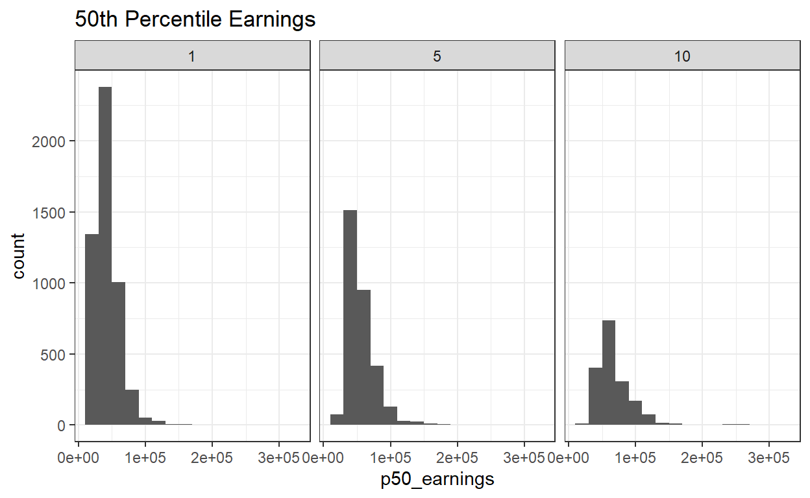
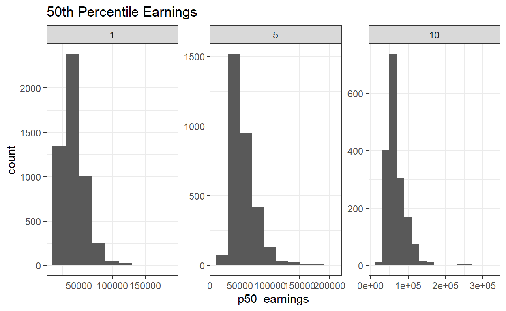
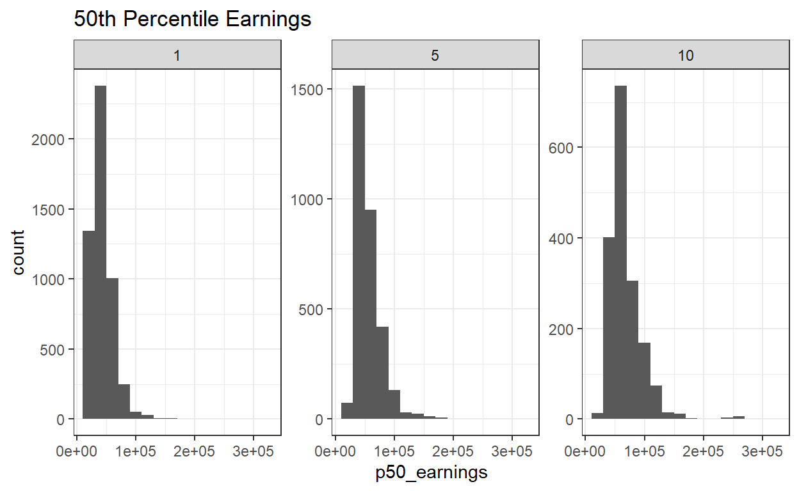
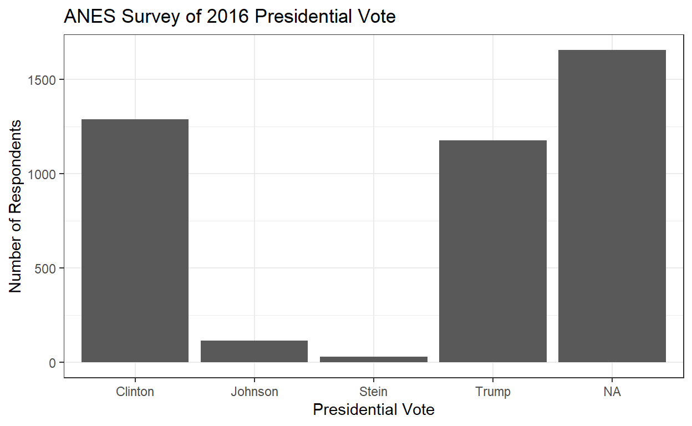
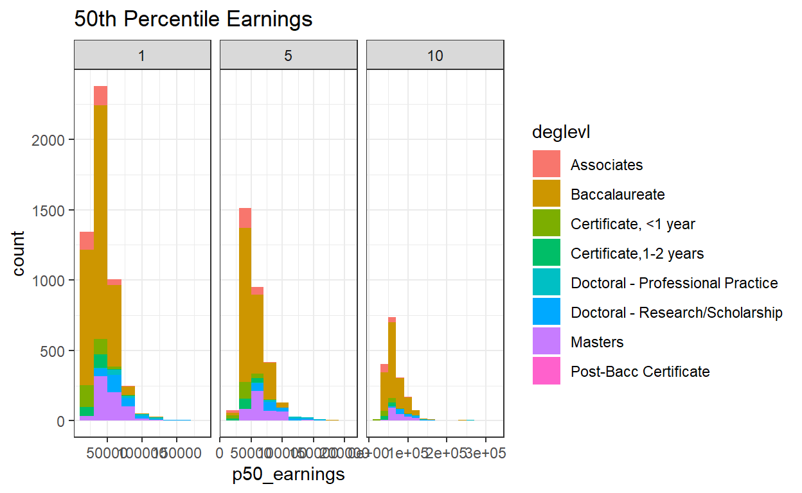
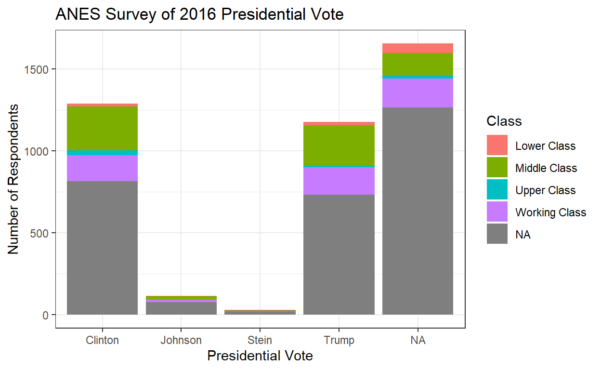
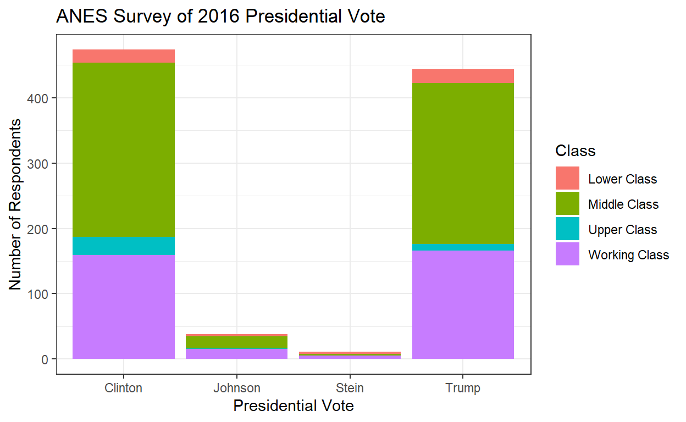
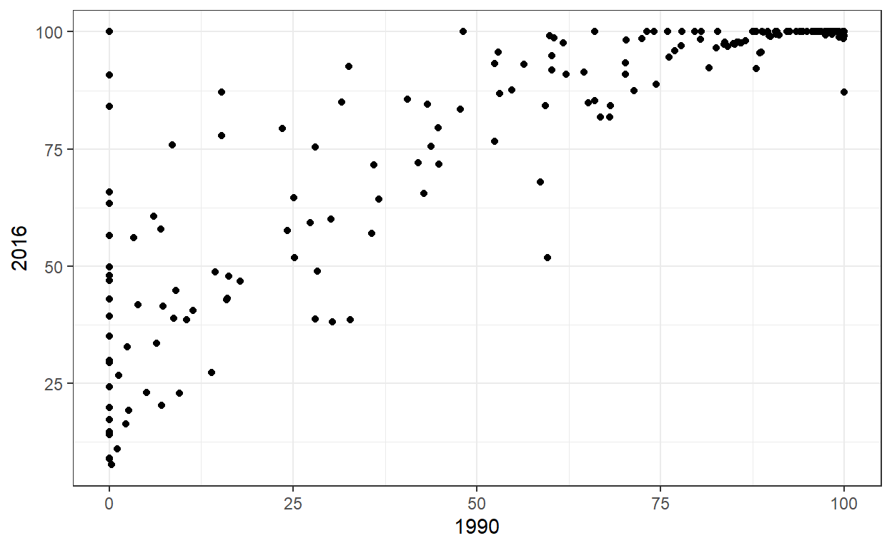
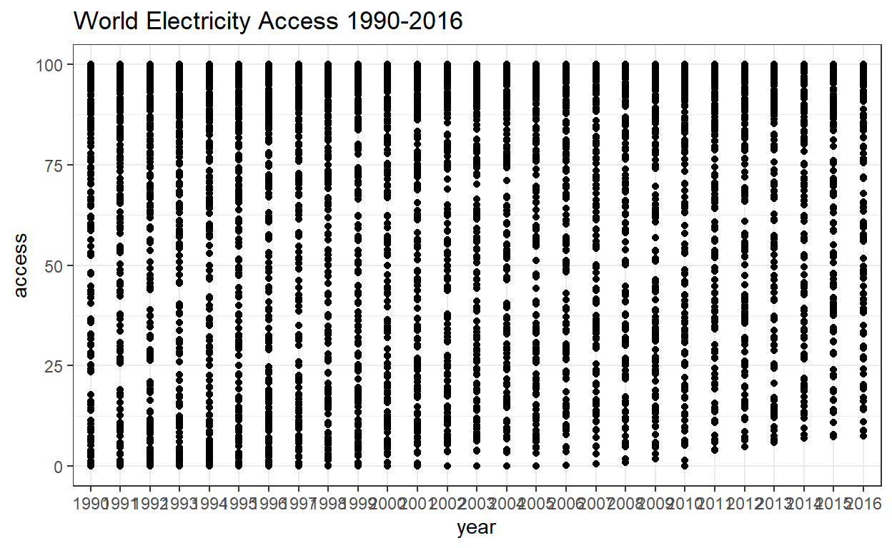
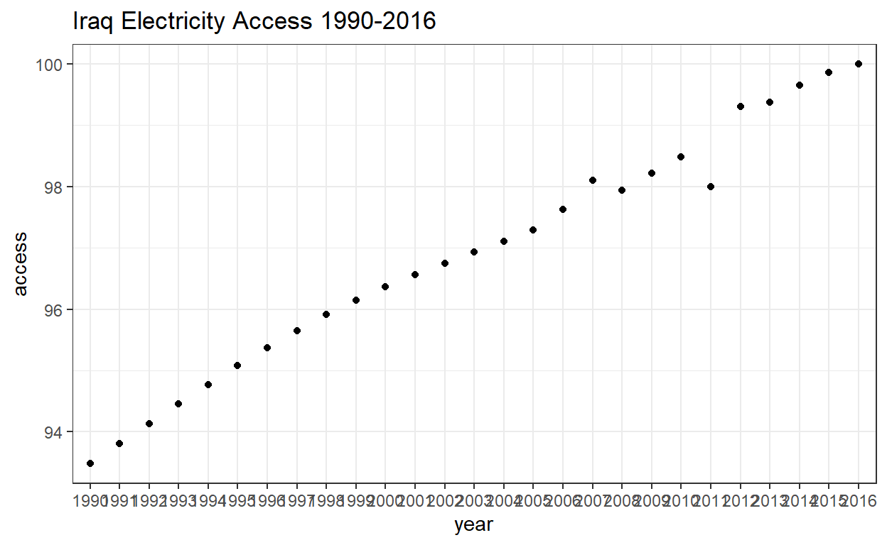

Introduction
In this tutorial, we will build on what we learned in our Intro to Visualization tutorial. Now, we will look to add dimensions to our plot, analyze differences across groups, and think about how best to design our graphics. All of this continues to build on the core idea that visualization is central to data science.
GGPlot: Facet_Wrap
One really useful addition we can make to ggplot() is facet_wrap(). Facet wrapping will divide the plot into subplots based on different values of another discrete variable in the dataset, kind of like group_by() with graphs.
There are multiple components within facet_wrap(). First is vars(), in which you choose the variable to base subplot divisions upon.
In the example below, we divide the histogram of p50_earnings into subplots based on year_postgrad with the addition of: facet_wrap(vars(year_postgrad))
#Divide the p50_earnings graph below based on year_postgrad
ggplot(pseo, aes(p50_earnings)) +
geom_histogram(binwidth = 20000) +
labs(title = "50th Percentile Earnings") +
theme_bw() +
facet_wrap(vars(year_postgrad))## Warning: Removed 8811 rows containing non-finite values (stat_bin).
Also, take note that we changed the binwidth of geom_histogram(). This just changes the width of the bars in the histogram. You can experiment with different values on your own or choose to leave it at default.
These three graphs all have the same scales for their x and y axes, even though the range of values are quite different in each. You can change the scales using scales = within facet_wrap(). Setting scales = "free" will adjust both the x and y axis for all graphs, or you can exclusively adjust the x axis with scales = "free_x" or the y axis with scales = "free_y". See what this means in the examples below.
When scales = "free":
ggplot(pseo, aes(p50_earnings)) +
geom_histogram(binwidth = 20000) +
labs(title = "50th Percentile Earnings") +
theme_bw() +
facet_wrap(vars(year_postgrad), scales = "free")## Warning: Removed 8811 rows containing non-finite values (stat_bin).
When scales = "free_x":
ggplot(pseo, aes(p50_earnings)) +
geom_histogram(binwidth = 20000) +
labs(title = "50th Percentile Earnings") +
theme_bw() +
facet_wrap(vars(year_postgrad), scales = "free_x")## Warning: Removed 8811 rows containing non-finite values (stat_bin).
When scales = "free_y":
ggplot(pseo, aes(p50_earnings)) +
geom_histogram(binwidth = 20000) +
labs(title = "50th Percentile Earnings") +
theme_bw() +
facet_wrap(vars(year_postgrad), scales = "free_y")## Warning: Removed 8811 rows containing non-finite values (stat_bin).
Pay attention to the axes to see what the differences are between these.
Exercise 6
Take the plot of presidential vote answers.
ggplot(anes, aes(Vote_16)) + geom_bar() +
theme_bw() +
labs(title = "ANES Survey of 2016 Presidential Vote", y = "Number of Respondents", x = "Presidential Vote")
Add a facet_wrap() function that divides the plot based on the variable Class. See what axis scaling option makes the most sense.
#Divide the graph below based on the variable Class
ggplot(anes, aes(Vote_16)) + geom_bar() +
theme_bw() +
labs(title = "ANES Survey of 2016 Presidential Vote", y = "Number of Respondents", x = "Presidential Vote")#Divide the graph below based on the variable Class
ggplot(anes, aes(Vote_16)) + geom_bar() +
theme_bw() +
labs(title = "ANES Survey of 2016 Presidential Vote", y = "Number of Respondents", x = "Presidential Vote") +
facet_wrap(vars(Class), scale = "free")GGPlot: Fill
One last modification to learn within ggplot() is fill, something we briefly discussed earlier. This setting is made within the base aes() function, so that you can list another variable to divide individual points/bars into different colors.
In the example below, the histogram of p50_earnings is filled based on the variable deglevl.
#Fill the p50_earnings graph based on the variable deglevl
ggplot(pseo, aes(p50_earnings, fill = deglevl)) +
geom_histogram(binwidth = 20000) +
labs(title = "50th Percentile Earnings") +
theme_bw() +
facet_wrap(vars(year_postgrad), scales = "free_x")## Warning: Removed 8811 rows containing non-finite values (stat_bin).
As you can see, there are now multiple colors as well as a color code that is created on the right.
We have now learned how to create a clean-looking, interesting graph with ggplot().
Exercise 7
Take the plot of presidential vote answers.
ggplot(anes, aes(Vote_16)) + geom_bar() +
theme_bw() +
labs(title = "ANES Survey of 2016 Presidential Vote", y = "Number of Respondents", x = "Presidential Vote")
Modify this graph with fill so that it is color coded based on the variable Class.
#Fill graph below based on the variable Class
ggplot(anes, aes(Vote_16)) + geom_bar() +
theme_bw() +
labs(title = "ANES Survey of 2016 Presidential Vote", y = "Number of Respondents", x = "Presidential Vote")#Fill graph below based on the variable Class
ggplot(anes, aes(Vote_16, fill = Class)) + geom_bar() +
theme_bw() +
labs(title = "ANES Survey of 2016 Presidential Vote", y = "Number of Respondents", x = "Presidential Vote") Wrangling and Plotting
The plots so far have been good, but still not ideal. Sometimes your graphs are limited by the data available to you and its format. To overcome these limitations, we can incorporate data wrangling functions from Tutorial 2 into our ggplot() graphs.
We will look at two different examples to incorporate filter() and gather() into plotting.
Filter
As you probably saw in the last exercises, the bar graphs of 2016 presidential vote are largely skewed by NA answers. It doesn’t look great.
ggplot(anes, aes(Vote_16, fill = Class)) + geom_bar() +
theme_bw() +
labs(title = "ANES Survey of 2016 Presidential Vote", y = "Number of Respondents", x = "Presidential Vote") 
Although statistical tests will ignore NA values in calculations, ggplot will graph them like any other value. Fortunately, we can counteract this.
We can use filter() to hide NA values from ggplot(). In the example below, we use piping (%>%) to filter out NA values before plotting them. We’ll come back to piping soon. For now, you just need to know that because we are piping, the function begins with anes %>% and then we can leave anes out of the beginning of ggplot(). The logical operator ! and the function is.na() are used together to select rows where Class is NOT NA. See it in action.
anes %>%
filter(! is.na(Class)) %>%
filter(! is.na(Vote_16)) %>%
ggplot(aes(Vote_16, fill = Class)) + geom_bar() +
theme_bw() +
labs(title = "ANES Survey of 2016 Presidential Vote", y = "Number of Respondents", x = "Presidential Vote") 
Much better.
Gather
The structure of the electric dataset is rather odd; each column is a separate year. Recall that we discussed this in our second tutorial. What would make more sense is to have a single column that is called year and another column called electric. To do this in R, we can use gather(). This setting offers a great opportunity to think about why this is important; without using gather(), we can only make scatterplots of electricity access values from one year compared to another year. This graph is not very helpful:
ggplot(electric, aes(`1990`, `2016`)) + geom_point() +
theme_bw()## Warning: Removed 10 rows containing missing values (geom_point).
However, if we use gather() to turn year and access into columns, we can make a scatterplot that compares access over time. This again uses piping (%>%) which is code we’ll discuss at greater length later on. The general idea, though, is that you are “passing” an object through a series of functions. So here we pipe the electric dataset through a gather function by begininning our code with electric %>%, then following that with gather().
electric %>%
gather(`1990`:`2016`, key = "year", value = "access") %>%
ggplot(aes(year, access)) +
geom_point() +
labs(title = "World Electricity Access 1990-2016") +
theme_bw()## Warning: Removed 89 rows containing missing values (geom_point).
Well, this still looks confusing. Now, we will use filter() to select a specific country to observe. Below, we examine electricity access in Iraq and finally make an insightful bivariate plot from the electric data.
electric %>%
gather(`1990`:`2016`, key = "year", value = "access") %>%
filter(`Country Name` == "Iraq") %>%
ggplot(aes(year, access)) +
geom_point() +
labs(title = "Iraq Electricity Access 1990-2016") +
theme_bw()
The y axis will automatically adjust to the specific values for Iraq, as well.
Exercise 8
Try using gather() and ggplot() to graph the electricity access of all countries over time, but use geom_boxplot() as your geometry. There should be a boxplot for every year.
#Make a series of boxplots comparing electricity access over time#Make a series of boxplots comparing electricity access over time
electric %>%
gather(`1990`:`2016`, key = "year", value = "access") %>%
ggplot(aes(year, access)) +
geom_boxplot() +
labs(title = "World Electricity Access 1990-2016") +
theme_bw()Conclusion & Glossary
You now know how to use ggplot() to create basic and advanced graphs for all types of variables and adjust various settings. You are also prepared to wrangle messy data in order to prepare it for graphing. In truth, you have only scratched the surface of what is possible with ggplot(). Check out this cheatsheet to see all the available geometries, scales, themes and labels that can be used. However, what we have covered in these tutorials should get you pretty far.
Coming up in the next tutorial… we will turn back to our datasets, and work to transform the variables.
Function Glossary
Here’s a recap of the functions you have encountered so far:
Tutorial 1: R Basics and Assigning Variables
- Basic mathematics:
+,-,*,/ - Logical operators:
==,>,<,>=,>= - Assign name:
<- - Create vector:
c()
Tutorial 2: Reading and Describing Data
- Preview data:
head() - Get dimensions:
dim() - Get column names and numbers:
colnames() - Select specific columns:
select()starts_with()ends_with()contains()
- Get values of column:
table() - Get proportions of values of column:
prop.table() - Collapse multiple columns into new rows:
gather() - Turn row data into new columns:
spread()
Tutorial 3: Intro to Visualization
- Make crosstabs:
xtabs() - Make graphs:
ggplot()- Histogram:
geom_histogram() - Density: geom_density()
- Bar graph:
geom_bar() - Scatterplot:
geom_point() - Boxplot:
geom_boxplot() - Violin plot:
geom_violin() - Smooth line plot:
geom_smooth()
- Histogram:
Tutorial 4: Advanced Visualization
- Make crosstabs:
xtabs() - Make graphs:
ggplot()- Divide plot into subplots:
facet_wrap()
- Divide plot into subplots:
- Color observations:
aes(fill =)